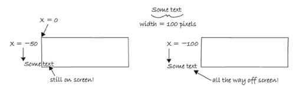
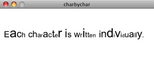
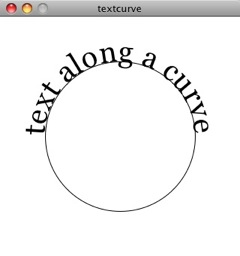

This tutorial is for Processing version 1.1+. If you see any errors or have comments, please let us know. This tutorial is from the book, Learning Processing, by Daniel Shiffman, published by Morgan Kaufmann Publishers, Copyright 2008 Elsevier Inc. All rights reserved.
The String class
If you are looking to display text onscreen with Processing, you've got to first become familiar with the String class. Strings are probably not a totally new concept for you, it's quite likely you've dealt with them before. For example, if you've printed some text to the message window or loaded an image from a file, you've written code like so:
println("printing some text to the message window!"); // Printing a String
PImage img = loadImage("filename.jpg"); // Using a String for a file name
Nevertheless, although you may have used a String here and there, it's time to unleash their full potential.
Where do we find documentation for the String class?
Although technically a Java class, because Strings are so commonly used, Processing includes documentation in its reference: http://www.processing.org/reference/String.html.
This page only covers some of the available methods of the String class. The full documentation can be found on java's String page.
What is a String?
A String, at its core, is really just a fancy way of storing an array of characters. If we didn't have the String class, we'd probably have to write some code like this:
char[] sometext = {'H', 'e', 'l', 'l', 'o', ' ', 'W', 'o', 'r', 'l', 'd'};
Clearly, this would be a royal pain in the Processing behind. It's much simpler to do the following and make a String object:
String sometext = "How do I make String? Type some characters between quotation marks!";
It appears from the above that a String is nothing more than a list of characters in between quotes. Nevertheless, this is only the data of a String. We must remember that a String is an object with methods (which you can find on the reference page.) This is just like how we learned in the Pixels tutorial that a PImage stores both the data associated with an image as well as the functionality: copy(), loadPixels(), etc.
For example, the method charAt() returns the individual character in the String at a given index. Note that Strings are just like arrays in that the first character is index #0!
String message = "some text here."; char c = message.charAt(3); println(c); // Results in 'e'
Another useful method is length(). This is easy to confuse with the length property of an array. However, when we ask for the length of a String object, we must use the parentheses since we are calling a function called length() rather than accessing a property called length.
String message = "This String is 34 characters long."; println(message.length());
We can also change a String to all uppercase using the toUpperCase() method (toLowerCase() is also available).
String uppercase = message.toUpperCase(); println(uppercase);
You might notice something a bit odd here. Why didn't we simply say "message.toUpperCase()" and then print "message" variable? Instead, we assigned the result of "message.toUpperCase()" to a new variable with a different name -- "uppercase".
This is because a String is a special kind of object. It is immutable. An immutable object is one whose data can never be changed. Once we create a String, it stays the same for life. Anytime we want to change the String, we have to create a new one. So in the case of converting to uppercase, the method toUpperCase() returns a copy of the String object with all caps.
Finally, let's look at equals(). Now, Strings can be compared with the "==" operator as follows:
String one = "hello"; String two = "hello"; println(one == two);
However, technically speaking, when "==" is used with objects, it compares the memory addresses for each object. Even though they contain the same data -- "hello"-- if they are different object instances "==" could result in a false comparison. The equals() function ensures that we are checking to see if two String objects contain the exact same sequence of characters, regardless of where that data is stored in the computer's memory.
String one = "hello"; String two = "hello"; println(one.equals(two));
Although both of the above methods return the correct result, it's safer to use equals(). Depending on how String objects are created in a sketch, "==" will not always work.
One other feature of String objects is concatenation, joining two Strings together. Strings are joined with the "+" operator. Plus, of course, usually means add in the case of numbers. When used with Strings, it means join.
String helloworld = "Hello" + "World";
Variables can also be brought into a String using concatenation.
int x = 10; String message = "The value of x is: " + x;
Displaying Text
The easiest way to display a String is to print it in the message window. This is likely something you've done while debugging. For example, if you needed to know the horizontal mouse location, you would write:
println(mouseX);
Or if you needed to determine that a certain part of the code was executed, you might print out a descriptive message.
println("We got here and we're printing out the mouse location!!!");
While this is valuable for debugging, it's not going to help our goal of displaying text for a user. To place text on screen, we have to follow a series of simple steps.
1. Declare an object of type PFont.
PFont f;
3. Create the font by referencing the font name and the function createFont_(). This should be done only once, usually in setup(). Just as with loading an image, the process of loading a font into memory is slow and would seriously affect the sketch's performance if placed inside draw(). You can see a list of your available system fonts by via PFont.list(). Because of limitations in Java, not all fonts can be used and some might work with one operating system and not others. When sharing a sketch with other people or posting it on the web, you may need to include a .ttf or .otf version of your font in the data directory of the sketch because other people might not have the font installed on their computer. Only fonts that can legally be distributed should be included with a sketch. In addition to the name of the font, you can specify the size as well as whether the font should be antialiased or not.
f = createFont("Arial",16,true); // Arial, 16 point, anti-aliasing on
4. Specify the font using textFont(). textFont() takes one or two arguments, the font variable and the font size, which is optional. If you do not include the font size, the font will be displayed at the size originally loaded. When possible, the text() function will use a native font rather than the bitmapped version created behind the scenes with createFont() so you have the opportunity to scale the font dynamically. When using P2D, the actual native version of the font will be employed by the sketch, improving drawing quality and performance. With the P3D renderer, the bitmapped version will be used and therefore specifying a font size that is different from the font size loaded can result in pixelated text.
textFont(f,36);
5. Specify a color using fill().
fill(255);
6. Call the text() function to display text. (This function is just like shape or image drawing, it takes 3 arguments -- the text to be displayed, and the x & y coordinate to display that text.)
text("Hello Strings!",10,100);
Here are all the steps together:
Example Simple Displaying Text PFont f; // STEP 2 Declare PFont variable void setup() { size(200,200); f = createFont("Arial",16,true); // STEP 3 Create Font } void draw() { background(255); textFont(f,16); // STEP 4 Specify font to be used fill(0); // STEP 5 Specify font color text("Hello Strings!",10,100); // STEP 6 Display Text }
Fonts can also be created using "Tools" --> "Create Font." This will create and place a VLW font file in your data directory which you can load into a PFont object using loadFont().
f = loadFont("ArialMT-16.vlw");
Animating Text
Let's look at two more useful Processing functions related to displaying text:
textAlign() -- specifies RIGHT, LEFT or CENTER alignment for text.
Example Text Align PFont f; void setup() { size(400,200); f = createFont("Arial",16,true); } void draw() { background(255); stroke(175); line(width/2,0,width/2,height); textFont(f); fill(0); textAlign(CENTER); text("This text is centered.",width/2,60); textAlign(LEFT); text("This text is left aligned.",width/2,100); textAlign(RIGHT); text("This text is right aligned.",width/2,140); }

textWidth() -- Calculates and returns the width of any character or text string.
Let's say we want to create a news ticker, where text scrolls across the bottom of the screen from left to right. When the news headline leaves the window, it reappears on the right hand side and scrolls again. If we know the x location of the beginning of the text and we know the width of that text, we can determine when it is no longer in view. textWidth() gives us that width.
To start, we declare headline, font, and x location variables, initializing them in setup().
// A headline
String headline = "New study shows computer programming lowers cholesterol.";
PFont f; // Global font variable
float x; // horizontal location of headline
void setup() {
f = createFont("Arial",16,true); // Loading font
x = width; // initializing headline off-screen to the right
}
In draw(), we display the text at the appropriate location.
// Display headline at x location textFont(f,16); textAlign(LEFT); text(headline,x,180);
We change x by a speed value (in this case a negative number so that the text moves to the left.)
// Decrement x x = x - 3;
Now comes more difficult part. It was easy to test when a circle reached the left side of the screen. We would simply ask: is x less than 0? With text, however, since it is left-aligned, when x equals zero, it is still viewable on screen. Instead, the text will be invisible when x is less than 0 minus the width of the text (See figure below). When that is the case, we reset x back to the right-hand side of the window, i.e. width.

// If x is less than the negative width, then it is completely off the screen
float w = textWidth(headline);
if (x < -w) {
x = width;
}
Here's the full example that displays a different headline each time the previous headline leaves the screen. The headlines are stored in a String array.
Example Scrolling Headlines // An array of news headlines String[] headlines = { "Processing downloads break downloading record.", "New study shows computer programming lowers cholesterol.", }; PFont f; // Global font variable float x; // horizontal location of headline int index = 0; void setup() { size(400,200); f = createFont("Arial",16,true); // Initialize headline offscreen to the right x = width; } void draw() { background(255); fill(0); // Display headline at x location textFont(f,16); textAlign(LEFT); text(headlines[index],x,180); // Decrement x x = x - 3; // If x is less than the negative width, // then it is off the screen float w = textWidth(headlines[index]); if (x < -w) { x = width; index = (index + 1) % headlines.length; } }
In addition to textAlign() and textWidth(), Processing also offers the functions textLeading(), textMode(), textSize() for additional display functionality.
Rotating text
Translation and rotation can also be applied to text. For example, to rotate text around its center, translate to an origin point and use textAlign(CENTER) before displaying the text.
Example: Rotating Text PFont f; String message = "this text is spinning"; float theta; void setup() { size(200, 200); f = createFont("Arial",20,true); } void draw() { background(255); fill(0); textFont(f); // Set the font translate(width/2,height/2); // Translate to the center rotate(theta); // Rotate by theta textAlign(CENTER); text(message,0,0); theta += 0.05; // Increase rotation }
Displaying text character by character
In certain graphics applications, displaying text with each character rendered individually is required. For example, if each character needs to move or be colored independently then simply saying
text("a bunch of letters",0,0);
will not do.
The solution is to loop through a String, displaying each character one at a time.
Let's start by looking at an example that displays the text all at once.
PFont f;
String message = "Each character is not written individually.";
void setup() {
size(400, 200);
f = createFont("Arial",20,true);
}
void draw() {
background(255);
fill(0);
textFont(f);
// Displaying a block of text all at once using text().
text(message,10,height/2);
}
We can rewrite the code to display each character in loop, using the charAt() function.
String message = "Each character is written individually.";
// The first character is at pixel 10.
int x = 10;
for (int i = 0; i < message.length(); i++) {
// Each character is displayed one at a time with the charAt() function.
text(message.charAt(i),x,height/2);
// All characters are spaced 10 pixels apart.
x += 10;
}
Calling the text() function for each character will allow us more flexibility (for coloring, sizing, and placing characters within one String individually). The above code has a pretty major flaw, however -- the x location is increased by 10 pixels for each character. Although this is approximately correct, because each character is not exactly ten pixels wide, the spacing is off.
The proper spacing can be achieved using the textWidth() function as demonstrated in the code below. Note how this example achieves the proper spacing even with each character being a random size!

PFont f;
String message = "Each character is written individually.";
void setup() {
size(400, 150);
f = createFont("Arial",20,true);
}
void draw() {
background(255);
fill(0);
textFont(f);
int x = 10;
for (int i = 0; i < message.length(); i++) {
textSize(random(12,36));
text(message.charAt(i),x,height/2);
// textWidth() spaces the characters out properly.
x += textWidth(message.charAt(i));
}
noLoop();
}
This "letter by letter" methodology can also be applied to a sketch where characters from a String move independently of one another. The following example uses object-oriented design to make each character from the original String a Letter object, allowing it to both be a displayed in its proper location as well as move about the screen individually.
Example Text breaking up PFont f; String message = "click mouse to shake it up"; // An array of Letter objects Letter[] letters; void setup() { size(260, 200); // Load the font f = createFont("Arial",20,true); textFont(f); // Create the array the same size as the String letters = new Letter[message.length()]; // Initialize Letters at the correct x location int x = 16; for (int i = 0; i < message.length(); i++) { letters[i] = new Letter(x,100,message.charAt(i)); x += textWidth(message.charAt(i)); } } void draw() { background(255); for (int i = 0; i < letters.length; i++) { // Display all letters letters[i].display(); // If the mouse is pressed the letters shake // If not, they return to their original location if (mousePressed) { letters[i].shake(); } else { letters[i].home(); } } } // A class to describe a single Letter class Letter { char letter; // The object knows its original "home" location float homex,homey; // As well as its current location float x,y; Letter (float x_, float y_, char letter_) { homex = x = x_; homey = y = y_; letter = letter_; } // Display the letter void display() { fill(0); textAlign(LEFT); text(letter,x,y); } // Move the letter randomly void shake() { x += random(-2,2); y += random(-2,2); } // Return the letter home void home() { x = homex; y = homey; } }
The character by character method also allows us to display text along a curve. Before we move on to letters, let's first look at how we would draw a series of boxes along a curve. This example makes heavy use of Trignometry.
Example Boxes along a curve PFont f; // The radius of a circle float r = 100; // The width and height of the boxes float w = 40; float h = 40; void setup() { size(320, 320); smooth(); } void draw() { background(255); // Start in the center and draw the circle translate(width / 2, height / 2); noFill(); stroke(0); // Our curve is a circle with radius r in the center of the window. ellipse(0, 0, r*2, r*2); // 10 boxes along the curve int totalBoxes = 10; // We must keep track of our position along the curve float arclength = 0; // For every box for (int i = 0; i < totalBoxes; i++) { // Each box is centered so we move half the width arclength += w/2; // Angle in radians is the arclength divided by the radius float theta = arclength / r; pushMatrix(); // Polar to cartesian coordinate conversion translate(r*cos(theta), r*sin(theta)); // Rotate the box rotate(theta); // Display the box fill(0,100); rectMode(CENTER); rect(0,0,w,h); popMatrix(); // Move halfway again arclength += w/2; } }

What we need to do is replace each box with a character from a String that fits inside the box. And since characters all do not have the same width, instead of using a variable "w" that stays constant, each box will have a variable width along the curve according to the textWidth() function.

Example Characters along a curve // The message to be displayed String message = "text along a curve"; PFont f; // The radius of a circle float r = 100; void setup() { size(320, 320); f = createFont("Georgia",40,true); textFont(f); // The text must be centered! textAlign(CENTER); smooth(); } void draw() { background(255); // Start in the center and draw the circle translate(width / 2, height / 2); noFill(); stroke(0); ellipse(0, 0, r*2, r*2); // We must keep track of our position along the curve float arclength = 0; // For every box for (int i = 0; i < message.length(); i++) { // Instead of a constant width, we check the width of each character. char currentChar = message.charAt(i); float w = textWidth(currentChar); // Each box is centered so we move half the width arclength += w/2; // Angle in radians is the arclength divided by the radius // Starting on the left side of the circle by adding PI float theta = PI + arclength / r; pushMatrix(); // Polar to cartesian coordinate conversion translate(r*cos(theta), r*sin(theta)); // Rotate the box rotate(theta+PI/2); // rotation is offset by 90 degrees // Display the character fill(0); text(currentChar,0,0); popMatrix(); // Move halfway again arclength += w/2; } }
Special thanks to Ariel Malka for his advice on this last curved text example.
This tutorial is for Processing version 1.1+. If you see any errors or have comments, please let us know. This tutorial is from the book, Learning Processing, by Daniel Shiffman, published by Morgan Kaufmann Publishers, Copyright 2008 Elsevier Inc. All rights reserved.